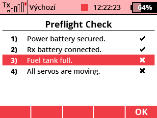

The Preflight Check app can be used to remind you of the steps you need to take before the actual flight. When the transmitter starts up and the model is loaded, a list of tasks will be displayed. Each of them must be manually confirmed after its fulfillment. You can add a custom task to the task list by editing the file "Apps/Preflight/data-<lang>.jsn" in the transmitter.
In the menu, choose Applications - User Applications. Press the F(3) key to open the application browser. Select the "Preflight" file here.
Open the application configuration. Press F(3) to add a new task.
Optionally, in the application configuration, you can press the F(1) key to set your own audio indication and the manual pre-flight check switch. The Preflight Check will also start automatically after the transmitter is switched on.
You can download the source code from the official JETImodel Lua-Apps GitHub repository.